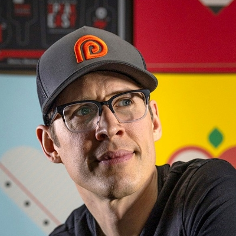

Adobe MAX is Adobe’s annual celebration of creativity — a high-energy conference where imagination meets innovation. It’s where Adobe unveils the lxatest tools and features in their creative suite, and artists, designers, and dreamers from around the world come together to get inspired, connect, and create. This year I was lucky enough to attend and below are the key take-aways from the sessions I attended.
MAX Online Free Sessions My Week's PicsHoward Pinsky, Principal Digital Imaging Community Engagement Specialist, Adobe
Puno Puno, Executive Creative Director, ilovecreatives, Inc.
Tyler Pate, Art Director and Illustrator, The Creative Pain
Explore the latest product announcements, features, and innovations that will help you bring your creative vision to life. Adobe leaders, including Shantanu Narayen, chair and chief executive officer, and David Wadhwani, president, digital media business, preview what’s ahead.
Ben Willmore, Founder, Adobe Community Expert, Digitalmastery.com
Eran Stern, Motion Design Educator, Adobe Certified Professional, Adobe Community Expert, Stern FX Ltd

Allen Petars, Partner and Chief Creative Officer, Peters Design Company
Brandon Baum - Social AI creator, Mark Rober - Nasa engineer turned Youtuber, James Gunn - CEO DC Studios
Bart Van De Weili, Head of Solutions Consulting, Adobe
Nathan & Dan - DKNG Studio CD and Illustrator
Nathan & Dan - DKNG Studio CD and Illustrator
James Bernard, Logo & Visual Identity Designer, Barnard Co
Luisa Winters, Motion Design & Video Editing Educator, Adobe Community Expert